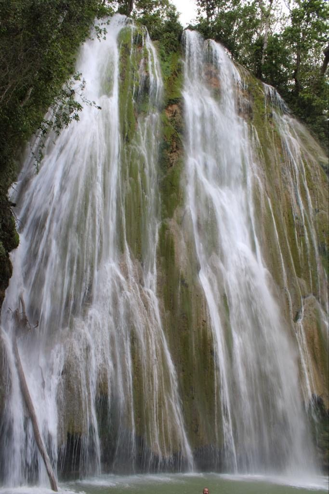
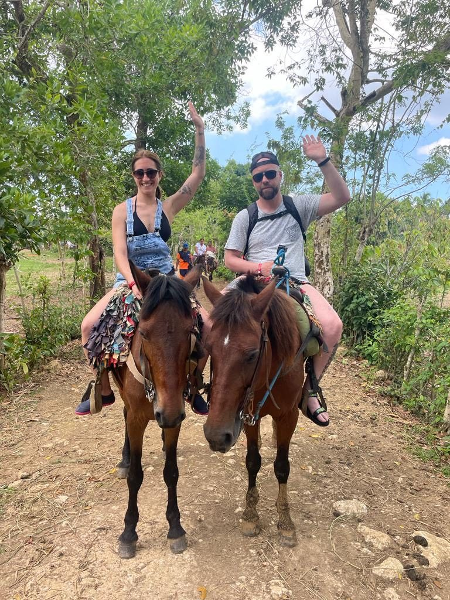
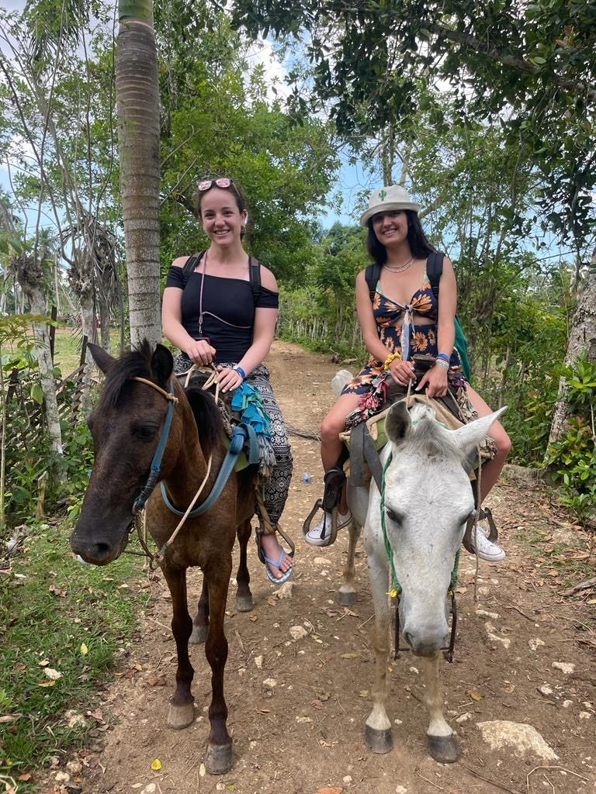
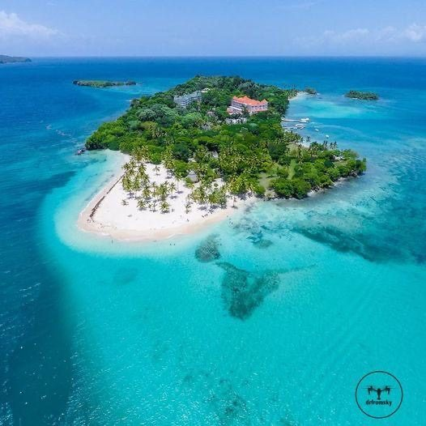
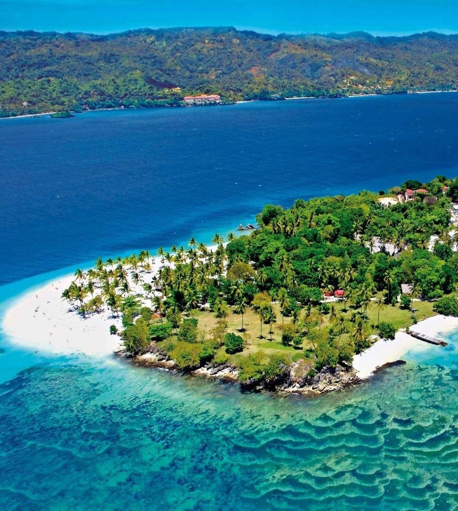

Samaná · precio
Tour a Samaná y Cayo Levantado desde Punta Cana
El tour a Samaná y Cayo Levantado desde Punta Cana cuesta $110 por adulto y $55 por niño de 5 a 8 años, con recogida en el hotel, guía, paseos en barco, el paseo a caballo hasta el Salto del Limón, almuerzo dominicano y tiempo en Cayo Levantado. De 0 a 4 años gratis y desde los 9 pagan como adulto.
Reservar Samaná por WhatsApp · $110

Cómo es el día
- Te recogemos temprano en tu hotel y vamos hacia Miches, pasando por pueblos dominicanos.
- En el poblado de La Cañita se toma el barco hasta la península de Samaná.
- Un camión safari sube a la montaña.
- Paseo a caballo hasta el Salto del Limón, uno de los saltos más altos del Caribe, con tiempo para bañarse y tomar fotos.
- Vuelta a caballo y en el safari al muelle para un almuerzo típico dominicano.
- Catamarán a Cayo Levantado (isla Bacardí): arena blanca y agua turquesa, cerca de 1 hora 30 minutos en la isla.
- Regreso a La Cañita y transporte a tu hotel.




Precio
| Edad | Precio |
|---|---|
| Adulto (9+) | $110 |
| Niño de 5 a 8 | $55 |
| Niño de 0 a 4 | Gratis |
Precios con recogida en hoteles de Punta Cana y Bávaro. Desde Cap Cana o Uvero Alto, consúltanos antes por WhatsApp.
Ejemplos de total
- 2 adultos: $220.
- 2 adultos y un niño de 7 años: $275.
- 4 adultos: $440.
Qué incluye
Transporte ida y vuelta desde tu hotel, guía en tu idioma, camión safari, los paseos en barco, el paseo a caballo al Salto del Limón, almuerzo típico dominicano y Cayo Levantado.
No incluye
Propinas (opcionales).
Hora de recogida
Es un día completo y la recogida es temprano en la mañana. La hora exacta te la confirmamos el día antes, cuando la confirma el operador.
Cómo reservar y pagar
Escríbenos por WhatsApp la fecha, cuántos adultos y las edades de los niños. Confirmamos la disponibilidad y te enviamos un link de pago seguro de Stripe por el total exacto, en dólares. El ticket te llega por WhatsApp y por correo. No se cobra en efectivo. Cancelación gratis hasta 24 horas antes con reembolso completo, y un cambio de fecha gratis.
Más información
Preguntas frecuentes
¿Cuánto cuesta el tour a Samaná desde Punta Cana?
$110 por adulto y $55 por niño de 5 a 8 años, con recogida en tu hotel de Punta Cana o Bávaro. De 0 a 4 años gratis y desde los 9 pagan como adulto.
¿Qué incluye?
Transporte ida y vuelta desde tu hotel, guía en tu idioma, camión safari, los paseos en barco, el paseo a caballo hasta el Salto del Limón, almuerzo típico dominicano y tiempo en Cayo Levantado.
¿Cuánto dura el tour a Samaná?
Es un día completo. La recogida es temprano en la mañana y la hora exacta te la confirmamos el día antes, cuando la confirma el operador.
¿Cómo reservo?
Escríbenos por WhatsApp la fecha, cuántos adultos y las edades de los niños. Confirmamos la disponibilidad y te enviamos un link de pago seguro de Stripe por el total exacto. El ticket te llega por WhatsApp y por correo.
¿Puedo cancelar?
Sí, gratis hasta 24 horas antes del tour, con reembolso completo. También puedes cambiar la fecha una vez, gratis, hasta 24 horas antes.
Precio revisado el 26 de noviembre de 2026.